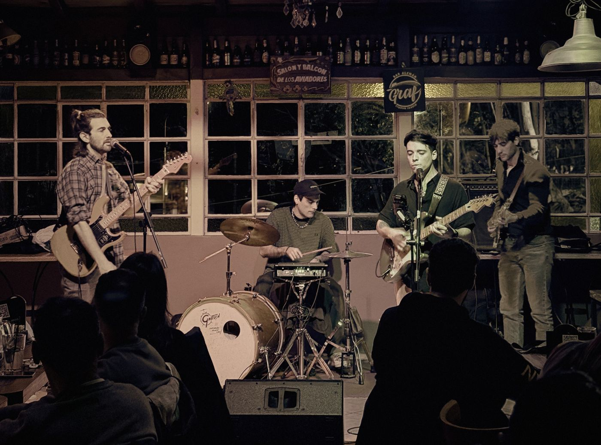
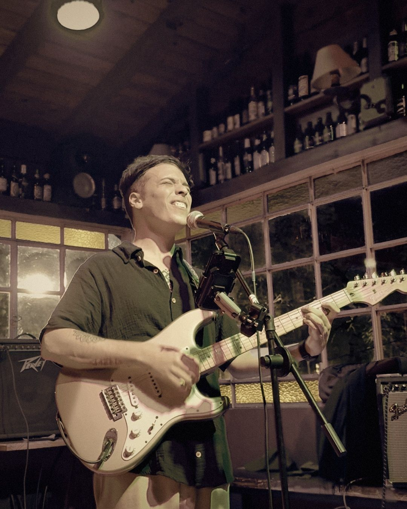
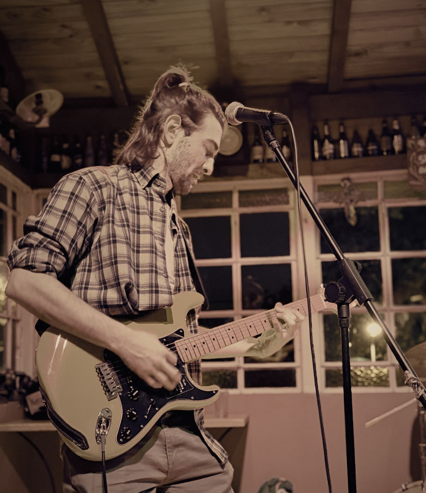
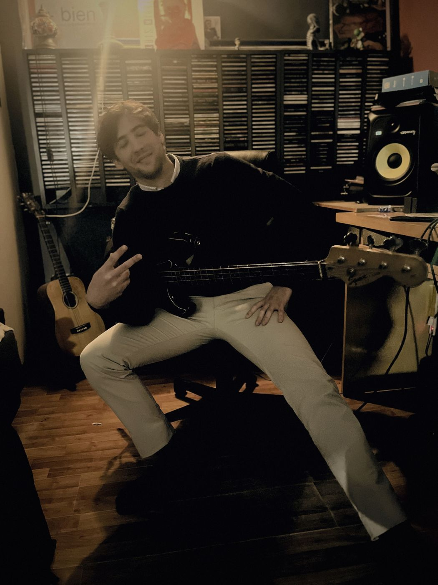
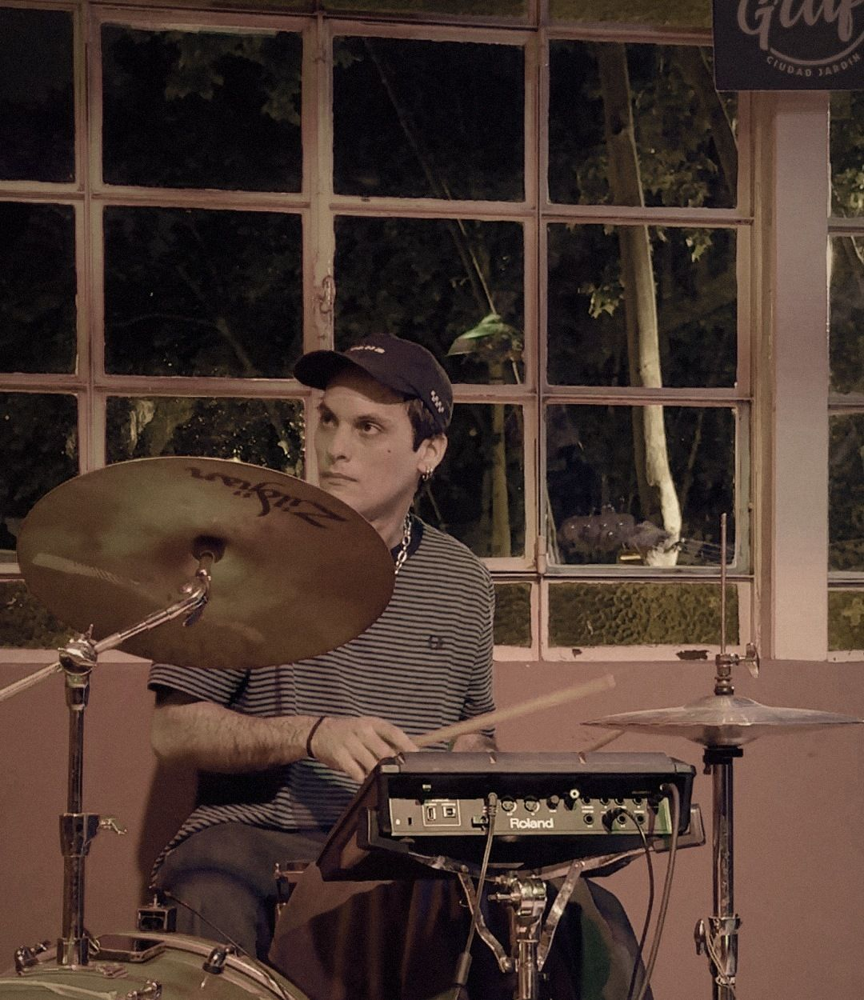

Yeite

Canciones propias, entre amigos.
Próxima fechaLunes · 21 h
7.12
El Emergente
Acuña de Figueroa 1030 · Almagro · abrimos la noche de Laura Hall
Entradas anticipadasEscuchar
Lado ASueños de sal y río
Yeite · versión de estudio
En vivo · Graf
Diccionario de barrio
yeite
[shéi·te] · sustantivo · lunfardo
- Una manera particular de hacer las cosas. La tuya.
- En la música, la forma propia de tocar de cada uno.
Esa puerta tiene su yeite: para cerrarla, empujás para arriba y después para adentro.
Cuatro yeites
La banda
Eze
voz y guitarra
Mati
guitarra y coros
Lucas
bajo
Fero
batería y samplesKit de prensa
Para lugares y productoresQuiénes son
Yeite es una banda de rock de autor de Ciudad Jardín, en el oeste del conurbano. Son cuatro amigos del barrio que tocan canciones propias, con letras que van del agua y la tierra a la vida de ciudad, y una marca registrada: los coros a dos voces.
Su casa es Graf, el bar de Ciudad Jardín donde tocan seguido. Escuchan a Cerati, Spinetta, Bob Marley, The Beatles y Gorillaz.
Datos
- Formación
- 2 guitarras, bajo, batería con samples, 2 voces
- Zona
- Ciudad Jardín · zona oeste
- Set
- 40 a 60 minutos de temas propios
- Temas
- Floto, En el valle, Valoraremos, Charuto, Nunca encontró, Páramo, Sueños de sal y río
Dónde tocamos
- 30/8/2026
- Graf, Ciudad Jardín
- 12/10/2026
- Graf, Ciudad Jardín
- 22/11/2026
- Casa Sonora, Ituzaingó
- 7/12/2026
- El Emergente, Almagro
Rider técnico
| Canal | Fuente | Toma |
|---|---|---|
| 1 | Bombo | Mic de bombo |
| 2 | Redoblante | SM57 |
| 3 | Samples (pad) | Línea / DI |
| 4 | Bajo | DI |
| 5 | Guitarra Eze | SM57 al ampli |
| 6 | Guitarra Mati | SM57 al ampli |
| 7 | Voz Eze | SM58 |
| 8 | Voz Mati | SM58 |
Monitores: tres mezclas (voces, bajo y batería). Nos adaptamos al equipo de cada lugar.